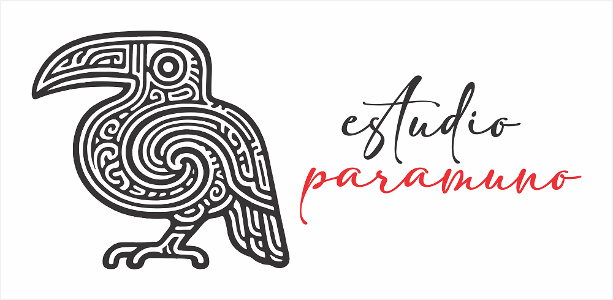

Estudio paramuno
Home > Estudio paramuno
Estudio paramuno is the space where my artistic, graphic, sonic, and material work takes shape. Located in the mist-covered slopes of Quisquiza, it is a small independent atelier dedicated to drawing, design, instrument-making, puppetry, low-tech craft, and experimental writing.

At the intersection of memory, ecology, and imagination, Estudio paramuno explores forms of creation that are slow, manual, and territorial. Bark, bone, ash, thread, and recycled materials often serve as starting points — not for traditional artworks, but for objects and narratives that question how we make, preserve, and transmit meaning.
The studio is still in formation. No production is currently underway — but this site will gradually present the processes, materials, and questions unfolding here.